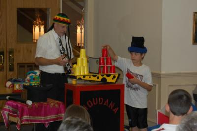

Comedy magic for birthday parties in southern New Hampshire
Dana Holleran has been performing magic for over 50 years, at birthday parties, schools and community events. Kids come up to help, the grown-ups laugh along, and at the beginning of every stage show, a live rabbit appears from his top hat.
Based in Amherst, near Manchester. Rated 5.0 from 37 reviews on The Bash.

The video plays from YouTube. More videos
See the rabbit from the hat
Dana now brings out the rabbit at the beginning of every stage show. In this older video from a birthday party, it was still the finale, with a young helper beside him.
It's the part parents bring up afterward. One wrote that "the bunny was a big hit with all the kids."
Check your dateWhat a show is like
- Kids are part of the act
- Volunteers come up to help with the tricks, and Dana tailors the show to the ages in the room, and sometimes to the season.
- It's funny
- Parents bring up his sense of humor as often as the tricks. One wrote that he "had some great jokes for the grownups that went right over the Littles heads."
- About an hour, start to finish
- Long enough to be the main event of the party, and paced so that even five-year-olds stay with him the whole way.
- Small rooms and big crowds
- He has played to seven kids in a living room and to well over a hundred at a community Christmas party.
- Schools and community events
- Besides birthdays, Dana performs school assemblies, after-school programs, neighborhood events and shows for senior communities.
- Close-up magic for children and adults
- For adult parties, Halloween parties, school events and fundraisers, Dana performs sleight-of-hand magic up close, table to table or standing in one place.

The linking rings, with a helper. 
A volunteer stacking cups. 
Umbrella hats, because why not. 
A living room audience.
What parents say
Dana performed at our daughter's 4th birthday and he was fantastic! He had lots of opportunities for kids to participate and he had them laughing all throughout the show. He tailored his content to the birthday party and even included some seasonal tricks. We highly recommend him!
Houdana did an amazing job of playing to an audience made up of a wide variety of ages. He was fun and funny. It was adorable watching the little ones in the front row sit on the edge of their chairs when the rabbit came out!
Houdana put on a wonderful performance for our after school program. Our age range is 5 yrs- 12 yrs and they were all very much engaged. He did a wonderful job making it interactive for the children too!
We had a large crowd (well over a hundred} Houdana did a great job keeping the kids engaged in his magic tricks, not easy to do with that many kids.
Dana was great. Had a really good setup and engaged all the kids well. (5/6 year olds). Thank you for making my daughter's birthday memorable!
This was our neighborhood's second year using Houdana for our annual fall event, and we hope to have him back next year.
He was great! Super professional! A group of 5 year olds fully captivated for a solid hour! … He arrived perfectly on time with everything ready to go! The rabbit out of the hat finale was the best!
He did very age appropriate tricks for the kiddos ranging in ages 1-8! He also had some great jokes for the grownups that went right over the Littles heads! … It was the perfect length of time (one hour)…
His close up magic highly impressed both students and adults. Houdana did it all in the context of a dimly lit noisy roller skating rink. A true experienced professional.
Read all client comments, or see his reviews on The Bash.
Where Dana performs
Dana lives in Amherst, near Manchester, and brings his table and props to you: living rooms, day cares, schools, function halls and community centers.
Recent shows have taken him to Nashua, Merrimack, Litchfield and Derry, north to Hopkinton, Gilmanton and Claremont, and over the state line to Lowell, Chelmsford and Tewksbury in Massachusetts.
He travels up to about 50 miles from Amherst. Not sure whether that covers your town? Ask when you check your date.
About Dana
Dana bought his first trick at Al Cohen's magic shop in Washington, DC, and he was hooked. Since then he has performed around Washington, DC, in West Virginia, and now in New Hampshire.
Mostly that has meant birthday parties. It has also meant schools, senior homes, a McDonald's, a Halloween festival in a park, and close-up magic at many restaurants. He is a member of Ring 166 of the International Brotherhood of Magicians, and you can watch some of his close-up routines on the Videos page.
Questions parents ask
How long is the show?
About an hour. One parent called it "the perfect length of time."
What ages is it for?
Dana adjusts the show to the ages in the room. Parents have booked him for groups from toddlers to 12-year-olds, and the grown-ups enjoy it too.
Do you come to our house?
Yes. Dana brings his own table and props, and fits into living rooms, day cares, classrooms and function halls.
Is the rabbit real?
Yes. A live rabbit appears from his top hat at the beginning of every stage show, and after the show everyone, kids and grown-ups alike, gets to pet the rabbit.
Do you perform for schools and groups?
Yes: school assemblies, after-school programs, neighborhood and community events, fundraisers and senior communities.
Do you do close-up magic?
Yes, for children and adults. Dana performs sleight-of-hand magic up close at adult parties, Halloween parties and events, moving table to table or standing in one place.
How far do you travel?
Up to about 50 miles from Amherst, which covers southern New Hampshire and nearby Massachusetts. Tell him your town when you check your date.
How much does a show cost?
Shows start at $150. Check your date and Dana will give you a price for your party.
Check your date
Tell Dana when and where your party is, and he'll get back to you to talk it through. Shows start at $150.
Dana was lovely, professional, and prompt with excellent communication with me prior to the event.
Rather talk?
603-203-0013
houdana_magic@hotmail.com